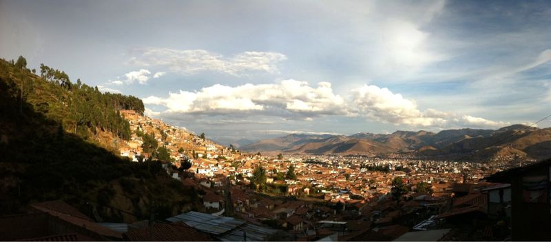

Sun, 28 Nov 2010 16:18:09 · peru · cusco · cuzco · city · scene · travel · photography
view over cusco from the hill of sacsayhuamán

View over Cusco from the hill of Sacsayhuamán, Peru.
Sun, 28 Nov 2010 16:18:09 · peru · cusco · cuzco · city · scene · travel · photography

View over Cusco from the hill of Sacsayhuamán, Peru.